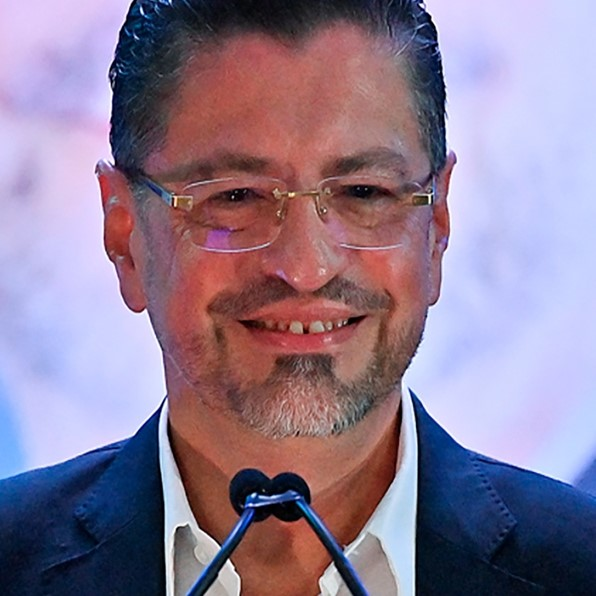
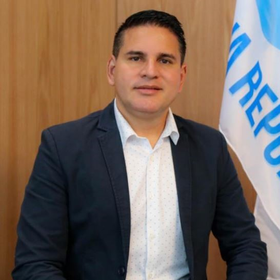
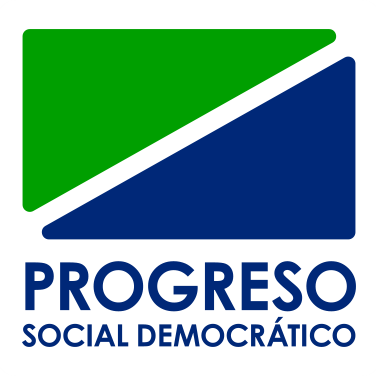

| Jose María Figueres | |
|  | Rodrigo Chaves |

|
Lineth Saborío |
|  | Fabricio Alvarado |
| Bandera | Candidato | Encuesta 1 | Encuesta 2 |
|---|---|---|---|
|  | Rodrigo Chaves | 1% | 5% |
| Figueres | 14% | 17% | |
| Fabricio Alvarado | 13% | 20% | |

|
Lineth Saborío | 5% | 16% |